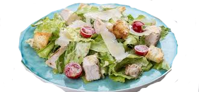

Приготуємо салат Цезар!
Приготуємо смачний салат Цезар! Ідеальне поєднання продуктів: хрусткі листя салату і запашна заправка - чи це не рай для гурмана? Пропоную вам приготувати салат Цезар разом!
Побалуйте внутрішнього ласунчикаОсновні інгредієнти:
- Салатний мікс (латук, рукола, салат йонський) - 300 г
- Куряче філе - 200 г
- Соус Цезар - 100 мл
Наріжте куряче філе на смужки та обсмажте на сковороді до золотистого кольору. Потім Розмішайте салатний мікс у глибокій мисці. Додайте обсмажене куряче філе до салатного міксу, і додайте соус Цезар.

Тобі знадобляться такі інгредієнти для начинки:
- Сушені крутони - 50 г
- Пармезан - 50 г
Посипте салат сушеними крутонами та натертим пармезаном. Та в кінці добре перемішайте салат І все! Тепер ваш салат Цезар готовий до подачі! Насолоджуйтеся його смаком та апетитом!